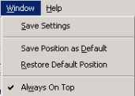

Open topic with navigation
Setting window location and size
If you have moved or resized the viewer window during the current session, you can do either of the following:
- To restore the window to the last saved position and size, select Restore Default Position from the Window menu.
- To save the current window position and size as the default setting for future use, select Save Position as Default from the Window menu.
